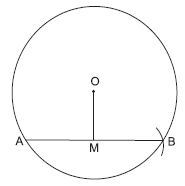
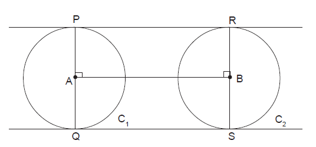

1. ವೃತ್ತದಲ್ಲಿ ನಿರ್ದಿಷ್ಟ ಅಳತೆಯ ಜ್ಯಾವನ್ನು ರಚಿಸುವುದು.
ಉದಾಹರಣೆ : 3 ಸೆಂ.ಮೀ. ತ್ರಿಜ್ಯವಿರುವ ವೃತ್ತದಲ್ಲಿ 5 ಸೆಂ.ಮೀ. ಉದ್ದವುಳ್ಳ ಜ್ಯಾವನ್ನು ರಚಿಸಿರಿ.

ರಚನೆಯ ಹಂತಗಳು
1. O ಬಿಂದುವನ್ನು ಕೇಂದ್ರವಾಗಿಟ್ಟುಕೊಂಡು 3 ಸೆಂ.ಮೀ. ತ್ರಿಜ್ಯದ ವೃತ್ತವನ್ನು ರಚಿಸಿರಿ.
2. ವೃತ್ತದ ಮೇಲೆ ಯಾವುದಾದರೊಂದು "P" ಬಿಂದುವನ್ನು ಗುರುತಿಸಿರಿ.
3. "P" ಬಿಂದುವನ್ನು ಕೇಂದ್ರವಾಗಿಟ್ಟುಕೊಂಡು 5 ಸೆಂ.ಮೀ. ವೃತ್ತವನ್ನು ನಲ್ಲಿ ಕತ್ತರಿಸಿ. ಸೇರಿಸಿರಿ.
2. ವೃತ್ತ ಕೇಂದ್ರದಿಂದ "ಜ್ಯಾ"ಗಿರುವ ದೂರವನ್ನು ಗೊತ್ತುಮಾಡುವುದು.
ಉದಾಹರಣೆ : 3.5 ಸೆಂ.ಮೀ. ತ್ರಿಜ್ಯವುಳ್ಳ ವೃತ್ತದಲ್ಲಿ 6 ಸೆಂ.ಮೀ. ಉದ್ದವಿರುವ ಜ್ಯಾವನ್ನು ರಚಿಸಿರಿ. ವೃತ್ತ ಕೇಂದ್ರವಾದ ಜ್ಯಾಗಿರುವ ದೂರವನ್ನು ಗೊತ್ತುಮಾಡಿರಿ.
ರಚನೆಯ ಹಂತಗಳು
1) "O" ಕೇಂದ್ರವಾಗಿ 3.5 ಸೆಂ.ಮೀ. ತ್ರಿಜ್ಯವಿರುವ ವೃತ್ತವನ್ನು ರಚಿಸಿರಿ.
2) ವೃತ್ತದಲ್ಲಿ AB=6 ಸೆಂ.ಮೀ. ಇರುವ ಜ್ಯಾ ರಚಿಸಿರಿ.
3) AB ಜ್ಯಾದ ಮಧ್ಯಬಿಂದು ಗುರುತಿಸಿ.
4) OM ಸೇರಿಸಿರಿ. ಅಳತೆ ಮಾಡಿರಿ.
OM ಉದ್ದವು O ಕೇಂದ್ರವಾದ AB ಜ್ಯಾಗಿರುವ ದೂರವನ್ನು ಸೂಚಿಸುತ್ತದೆ.
2. ಎರಡೂ ವೃತ್ತಗಳು ಸಮನಾದ ತ್ರಿಜ್ಯವನ್ನು ಹೊಂದಿರುವಾಗ ನೇರ ಸ್ಪರ್ಶಕಗಳನ್ನು ರಚಿಸುವುದು.
ಉದಾ : 2 ಸೆಂ.ಮೀ. ತ್ರಿಜ್ಯವುಳ್ಳ ಪರಸ್ಪರ ಸಮನಾದ ಎರಡು ವೃತ್ತಗಳ ಕೇಂದ್ರಗಳ ನಡುವಿನ ದೂರ 6 ಸೆಂ.ಮೀ. ಇದ್ದಾಗ ನೇರ ಸಾಮಾನ್ಯ ಸ್ಪರ್ಶಕಗಳನ್ನು ರಚಿಸಿರಿ.
ಹಂತಗಳು: 1)AB=6 ಸೆಂ.ಮೀ. ಇರುವ ರೇಖಾ ಖಂಡವನ್ನು ಎಳೆಯಿರಿ.
2) A ಮತ್ತು B ವೃತ್ತ ಕೇಂದ್ರಗಳುಳ್ಳ 2 ಸೆಂ.ಮೀ. ತ್ರಿಜ್ಯದ ವೃತ್ತಗಳನ್ನು ರಚಿಸಿರಿ.
3) A ಮತ್ತು B ಬಿಂದುಗಳಲ್ಲಿ AB ಗೆ ಲಂಬ ರಚಿಸಿರಿ.
4) ಈ ಲಂಬಗಳು ವೃತ್ತ C1 ಅನ್ನು P ನಲ್ಲಿ ಮತ್ತು Q ನಲ್ಲಿ ವೃತ್ತ C2 ನಲ್ಲಿ R ನಲ್ಲಿ ಮತ್ತು S
ನಲ್ಲಿ ಛೇದಿಸುತ್ತವೆ.
5) PR ಮತ್ತು QS ಸೇರಿಸಿರಿ